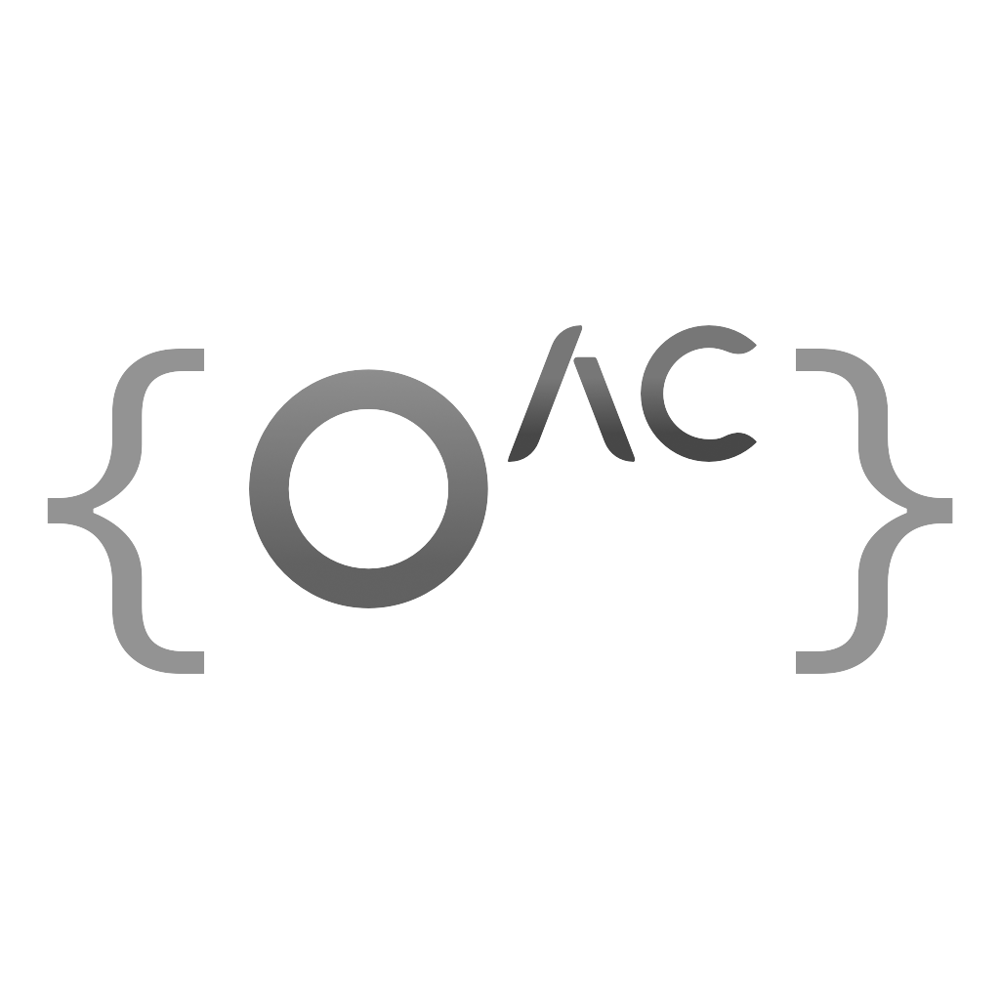

Hey!
I'm Liker, a 14-year-old French UI designer and developer, passionate about creating stunning and user-friendly interfaces. I'm fluent in both French and English (currently learning German), making it easy for me to collaborate with teams from around the world! I'm always pushing my programming skills forward and currently diving into Compilers, C, C++ and Node.js, on top of my solid experience with C#, Lua (with it's subset Luau), and Python 3.
I'm really passionate about web development, both frontend and backend. At the moment, I'm diving into TailwindCSS, and I'm excited to be using it to create this portfolio page!
I'm also interested in cybersecurity, and I'm working on ways to protect systems from bad actors. Keeping the online world safe is something I'm passionate about, and I'm always looking for new ways to improve it's security.
Positions

OpenAC
Founder
As the Founder of OpenAC, I worked with Unlimited_Objects (Co-Founder) and Müsli (Developer) to create a strong anticheat system that helps keep your game safe from cheaters. OpenAC offers around-the-clock AI support, customized solutions, and advanced protection to stop cheaters in their tracks. Plus, it's really easy to use with its simple API.
Past Work
SecureLuaVirtualMachine
Lua Sandboxing Utility
SLVM (SecureLuaVirtualMachine) is a Lua virtual machine designed to safely run untrusted user code for education purposes, like tutorials, for the Roblox Game Engine. Built on top of the FiOne Project by Rerumu, SLVM offers powerful features like closure hooking, read/write hooks, and custom variables through the Lua Environment table. It also includes a rules system to block access to sensitive elements, and optional settings for call sandboxing and loop throttling to prevent vulnerabilities.
ER:LC AutoRob Tool
Robbery Minigame Automation
The ERLC Auto-Rob Tool, created by me and IceMinister, is a tool made in the C# programming language designed to automate minigames in 'Emergency Response: Liberty County' (ERLC). It simplifies tasks like lockpicking, ATM robberies, and jewelry robbing by automating these actions, making gameplay smoother and more efficient. You can simply open the tool, select the task, and let it do the work, saving you time and effort in the game.